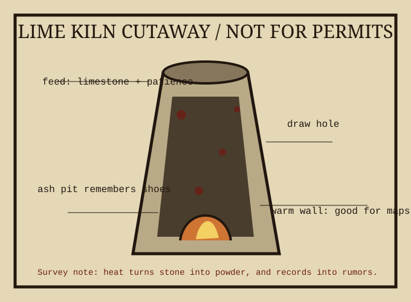

Survey copied from a folded plan found behind a radiator. Not a real building permit. Useful as a map of heat, ash, and where people pinned damp notes to dry.
Lime kilns turn limestone into quicklime by heat. This page is interested in the human residue: shoe ash, penciled arrows, meal breaks, and the way a warm wall becomes a community notice board before anybody names it one.